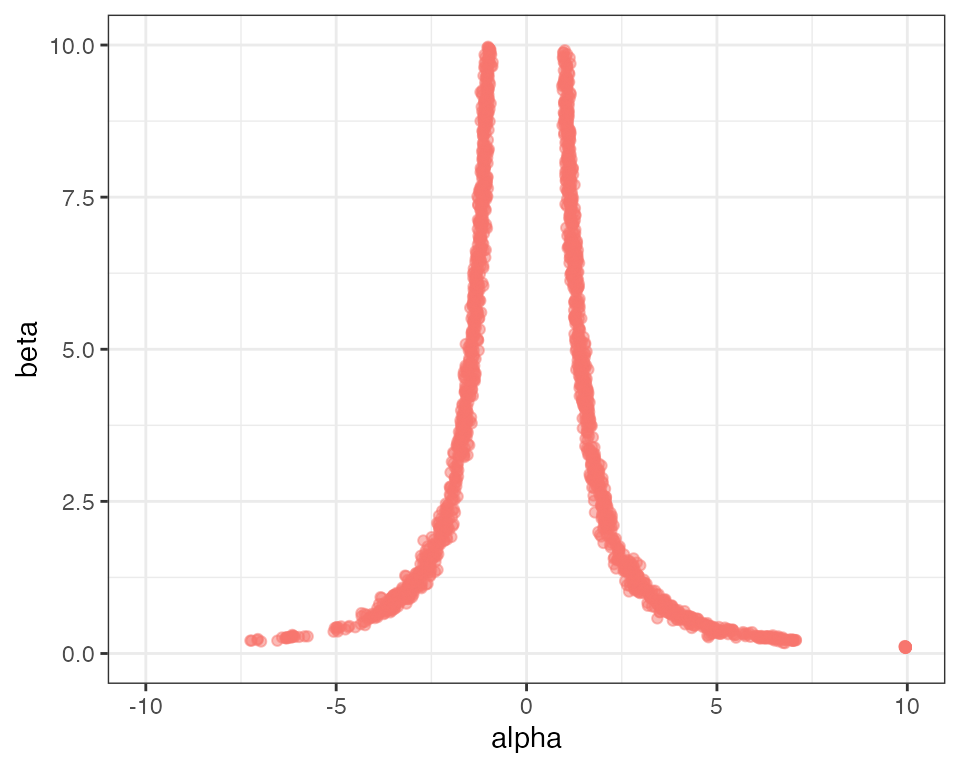
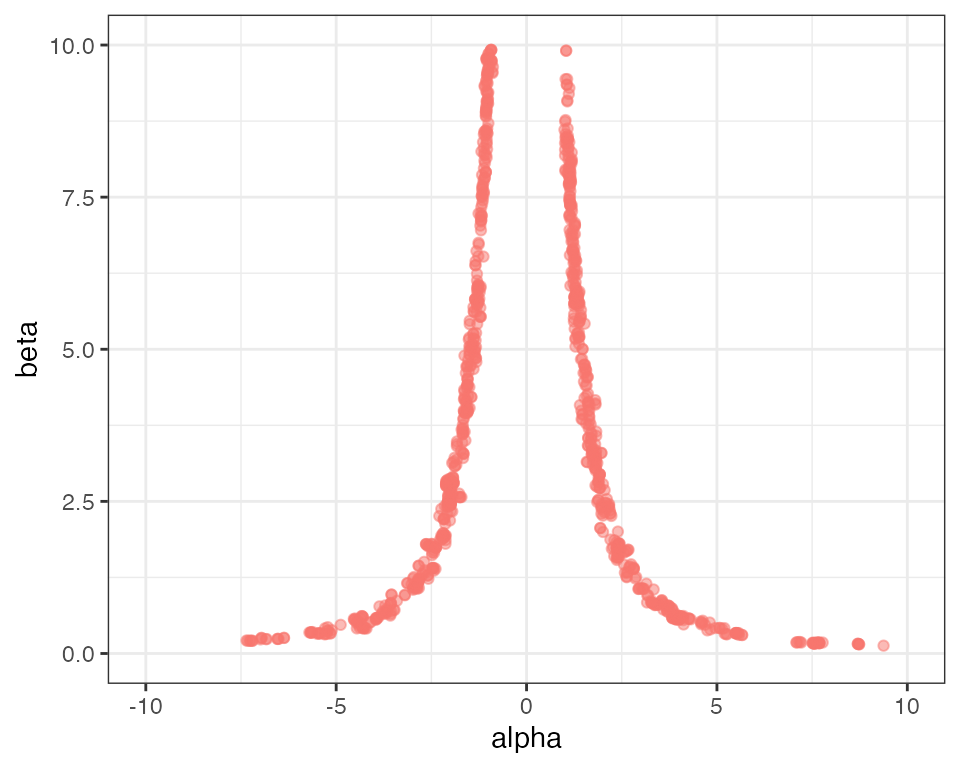

Parallel Tempering
Bob Verity and Pete Winskill
2024-06-26
Source:vignettes/metropolis_coupling.Rmd
metropolis_coupling.Rmd#> Registered S3 method overwritten by 'GGally':
#> method from
#> +.gg ggplot2MCMC becomes considerably harder when the posterior distribution is 1) highly correlated, and/or 2) highly multimodal. For exampe, if your posterior has Twin Peaks then ordinary Metropolis-Hastings might not be enough. Parallel tempering tends to mitigate these problems and requires nothing more than some extra heated chains.
This vignette demonstrates how parallel tempering can be implemented within drjacoby to solve a deliberately awkward MCMC problem.
Setup
For this example we will start by writing the likelihood and prior
functions in C++. If this sounds unfamiliar to you, check out the earlier
vignette for a simple example. Our basic model will assume that our
data are normally distributed with mean alpha^2*beta. The
alpha^2 term here means that both positive and negative
values of alpha map to the same value, thereby creating a
multimodal distribution. The *beta term ensures that
alpha and beta are highly correlated. We will
also use a third parameter epsilon to represent some random
noise that we want to integrate over. While this is a highly contrived
example, it does have the advantage of being horrendously awkward!
For our prior we assume that alpha is uniform [-10,10],
beta is uniform [0,10], and epsilon is
normally distributed with mean 0 and standard deviation 1.
#include <Rcpp.h>
using namespace Rcpp;
// [[Rcpp::export]]
SEXP loglike(Rcpp::NumericVector params, Rcpp::List data, Rcpp::List misc) {
// unpack data
std::vector<double> x = Rcpp::as< std::vector<double> >(data["x"]);
// unpack parameters
double alpha = params["alpha"];
double beta = params["beta"];
double epsilon = params["epsilon"];
// sum log-likelihood over all data
double mean = alpha*alpha*beta + epsilon;
double ret = 0.0;
for (unsigned int i = 0; i < x.size(); ++i) {
ret += R::dnorm(x[i], mean, 1.0, true);
}
// return as SEXP
return Rcpp::wrap(ret);
}
// [[Rcpp::export]]
SEXP logprior(Rcpp::NumericVector params, Rcpp::List misc) {
// unpack parameters
double epsilon = params["epsilon"];
// calculate logprior
double ret = -log(20.0) - log(10.0) + R::dnorm(epsilon, 0.0, 1.0, true);
// return as SEXP
return Rcpp::wrap(ret);
}
// [[Rcpp::export]]
SEXP create_xptr(std::string function_name) {
typedef SEXP (*funcPtr_likelihood)(Rcpp::NumericVector params, Rcpp::List data, Rcpp::List misc);
typedef SEXP (*funcPtr_prior)(Rcpp::NumericVector params, Rcpp::List misc);
if (function_name == "loglike"){
return(Rcpp::XPtr<funcPtr_likelihood>(new funcPtr_likelihood(&loglike)));
}
if (function_name == "logprior"){
return(Rcpp::XPtr<funcPtr_prior>(new funcPtr_prior(&logprior)));
}
stop("cpp function %i not found", function_name);
}As always, we need to define a dataframe of parameters so that drjacoby knows what parameter ranges to expect:
# define parameters dataframe
df_params <- define_params(name = "alpha", min = -10, max = 10, init = 5,
name = "beta", min = 0, max = 10, init = 5,
name = "epsilon", min = -Inf, max = Inf, init = 0)Finally, we need some data. For simplicity we will use a series of values drawn from a normal distribution with mean 10. These are obviously not drawn from the true model, but will have the advantage of creating a horribly awkward posterior.
Running the MCMC
First, we will try running the basic MCMC without parallel tempering.
The following block of code repeats the same MCMC analysis nine times,
each time producing a plot of posterior alpha against
beta:
plot_list <- list()
for (i in seq_len(9)) {
# run MCMC
mcmc <- run_mcmc(data = data_list,
df_params = df_params,
loglike = "loglike",
logprior = "logprior",
burnin = 1e3,
samples = 1e4,
chains = 1,
silent = TRUE)
# create plot of alpha against beta
plot_list[[i]] <- plot_scatter(mcmc, "alpha", "beta") +
ggplot2::ylim(0, 10) + ggplot2::xlim(-10, 10) + ggplot2::theme(legend.position = "none")
}
# plot grid
gridExtra::grid.arrange(grobs = plot_list)Clearly this MCMC is not mixing well! By looking over all nine plots we can get a rough idea of what the distribution should look like, but no single MCMC run has captured it adequately. You can experiment with increasing the number of samples - you should get better results for more samples, but a very large number of samples are needed before we get good mixing between the left and right sides of the distribution.
Parallel tempering is perfectly designed to solve this kind of
problem. To activate parallel tempering we need to specify an additional
argument to the run_mcmc() function - the number of
rungs. Each rung represents a different MCMC chain arranged
in a “temperature ladder”, with the hotter chains being more free to
explore the parameter space. Every iteration, chains have the option of
swapping parameter values between rungs, thereby allowing the
freely-moving hot chains to propose values to the more constrained
colder chains. When looking at the output, we tend to focus exclusively
on the coldest chain which can be interpreted the same way as a single
chain from regular MCMC.
In this example we use 20 rungs:
# run MCMC
mcmc <- run_mcmc(data = data_list,
df_params = df_params,
loglike = "loglike",
logprior = "logprior",
burnin = 1e3,
samples = 1e4,
rungs = 20,
chains = 1,
pb_markdown = TRUE)
#> MCMC chain 1
#> burn-in
#> | |======================================================================| 100%
#> acceptance rate: 42.5%
#> sampling phase
#> | |======================================================================| 100%
#> acceptance rate: 44%
#> chain completed in 1.126265 seconds
#> total MCMC run-time: 1.13 seconds
# create plot of alpha against beta
plot_scatter(mcmc, "alpha", "beta") +
ggplot2::ylim(0, 10) + ggplot2::xlim(-10, 10) + ggplot2::theme(legend.position = "none")
You should see a much better characterisation of the posterior distribution. The run time scales approximately linearly with the number of rungs, so there is a computational cost to using this method, but on the other hand our results are far better than we would obtain by simply increasing the number of samples by a factor of 20.
How many rungs to use?
Parallel tempering in drjacoby works by proposing swaps between adjacent rungs in the temperature ladder, which are accepted or rejected according to the standard Metropolis-Hastings ratio. If, for example, a hot rung happens upon a set of parameter values that have high likelihood then there is a good chance these values will be swapped up to the next rung. In this way, information can effectively bubble-sort its way from the prior (the hottest chain) to the posterior (the coldest chain). The average chance of a swap being accepted depends on the two adjacent rungs being similar enough in distribution that values drawn from one have a high likelihood in the other. This, in turn, means that swaps have a higher chance of being accepted when we have a large number of densely packed rungs.
To explore this, we start by re-running the above MCMC with a small
number of rungs and a small number of samples to highlight the problem.
We can use the plot_mc_acceptance() function to plot the
acceptance rate between rungs:
# run MCMC
mcmc <- run_mcmc(data = data_list,
df_params = df_params,
loglike = "loglike",
logprior = "logprior",
burnin = 1e3,
samples = 1e3,
rungs = 10,
chains = 1,
silent = TRUE)
# plot coupling acceptance rates
plot_mc_acceptance(mcmc, x_axis_type = 2)
The 10 vertical grey bars in the above plot show the positions of our
10 rungs in the thermodynamic interval [0,1], and the red dots between
them show the proportion of swaps that were accepted between rungs (this
information is available via mcmc$diagnostics$mc_accept).
Notice that the acceptance rate between the hottest and second-hottest
rung is close to zero, meaning very little of the information in the
hottest rung made it up the ladder to the colder rungs. We can see the
problems this causes when we plot the posterior draws:
plot_scatter(mcmc, "alpha", "beta") +
ggplot2::ylim(0, 10) + ggplot2::xlim(-10, 10) + ggplot2::theme(legend.position = "none")
Although we have some mixing between the left and right sides of the distribution, overall sampling is still very patchy.
One way of improving mixing between rungs is simply to increase the number of rungs so the distance between distributions is smaller:
# run MCMC
mcmc <- run_mcmc(data = data_list,
df_params = df_params,
loglike = "loglike",
logprior = "logprior",
burnin = 1e3,
samples = 1e3,
rungs = 50,
chains = 1,
silent = TRUE)
# plot coupling acceptance rates
plot_mc_acceptance(mcmc, x_axis_type = 2)
# create plot of alpha against beta
plot_scatter(mcmc, "alpha", "beta") +
ggplot2::ylim(0, 10) + ggplot2::xlim(-10, 10) + ggplot2::theme(legend.position = "none")This has helped, as we now have acceptance rates going “deeper”
towards the prior, however the hottest rung is still not passing
information up the ladder. This strategy also comes at a high
computational cost, as we are effectively running the MCMC algorithm 50
times. A more efficient method is usually to change the distribution of
rungs so they are more concentrated at low thermodynamic powers
(i.e. near the prior end of the spectrum). This can be achieved through
the parameter alpha, which represents a power that the
temperature ladder is raised to. Higher values of alpha
therefore lead to rungs being more concentrated at the prior end of the
spectrum. The previous two MCMCs had alpha set to 1.0 by
default, leading to evenly distributed rungs between [0,1]. Now we
repeat the MCMC with just 20 rungs and alpha = 5.0:
# run MCMC
mcmc <- run_mcmc(data = data_list,
df_params = df_params,
loglike = "loglike",
logprior = "logprior",
burnin = 1e3,
samples = 1e3,
rungs = 20,
chains = 1,
alpha = 5.0,
silent = TRUE)
# plot coupling acceptance rates
# we could also use the option x_axis_type = 1 if we wanted to see these
# points spread out evenly, rather than at their true position in the
# thermodynamic interval
plot_mc_acceptance(mcmc, x_axis_type = 2)
# create plot of alpha against beta
plot_scatter(mcmc, parameter1 = "alpha", "beta") +
ggplot2::ylim(0, 10) + ggplot2::xlim(-10, 10) + ggplot2::theme(legend.position = "none")
We find that with just 20 rungs we now have decent acceptance rates
all the way through the temperature ladder. If we really wanted to
fine-tune the mixing we could use the beta_manual argument
inside run_mcmc() to define the temperature ladder exactly
as a vector of values between 0 and 1. Note, this ladder is always
raised to the power alpha, so we should set
alpha=1.0 if we don’t want any additional transformation
applied.
In summary, the correct number of rungs to use in parallel tempered MCMC is whatever number provides decent acceptance rates all the way through our temperature ladder. When this is the case we can be condifent that the prior is “talking to” the posterior, making it extremely unlikely (but not impossible) that the MCMC is still missing large parts of the posterior distribution.